Activity: Copy and move face sets
This activity demonstrates the method of copying and moving design features within a part due to a design change. In this activity you will:
-
Extend a face (this represents the design change).
-
Copy a face set.
-
Drag this set into another position.
-
Delete the original set.
Click here to download the activity file.
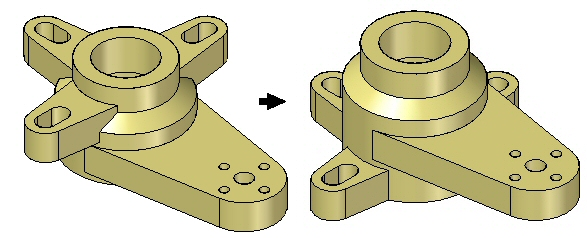
In this activity, you will respond to a major design change. Three mounting arms have to move as the body of this part gets taller.
-
Open cut_copy.par.
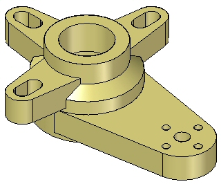
Rotate the view so you can see the bottom and select the bottom face.
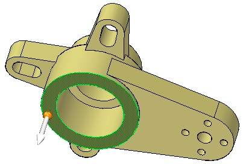
Extend the face a distance of 25 mm.
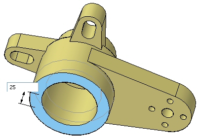
Left-click to finish.
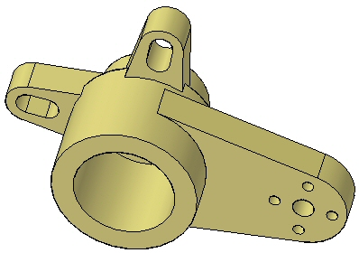
Select the features Ear, Slot, and Ear Slot Pattern, either graphically or from PathFinder. Make sure the steering wheel origin lies on an edge of the bottom of the select set.
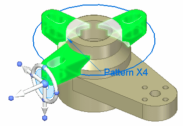
While holding down the Ctrl key, drag the face set along the primary axis of the steering wheel.
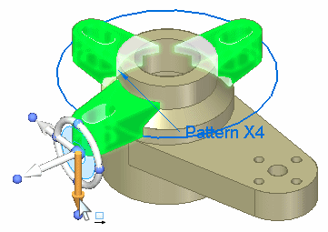
A copy of the original set is connected to the cursor, and it moves dynamically. Instead of entering a specific value in the dialog box, select the edge of the bottom face.
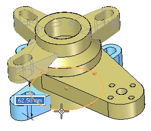
The copied set locks to the bottom face.
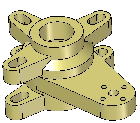
Press Escape to finish.
Note the addition of the copied set in PathFinder.
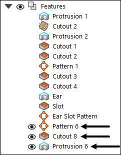
Select the original face set: Ear, Slot, and Ear Slot Pattern.
Delete this set by either
-
Right-click and choose Delete, or
-
Press Delete.
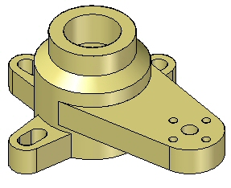
Activity complete. Save and close the file.
In this activity you learned how to copy and move a select set. The same operation could be accomplished by using the detach option. The select set would then have to be attached after movement.
-
Click the Close button in the upper-right corner of this activity window.